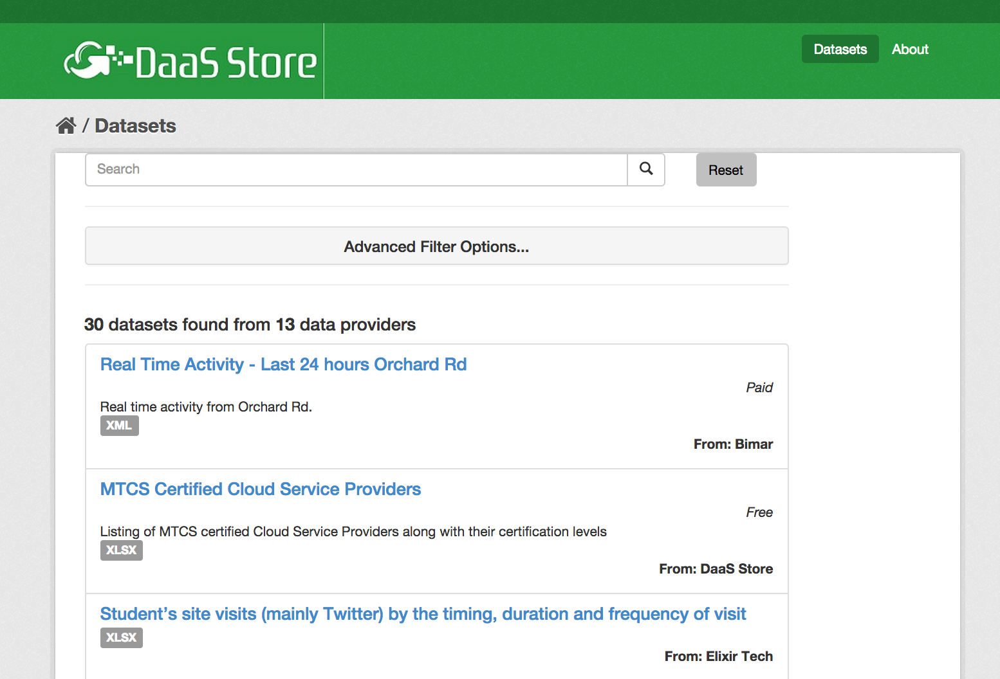
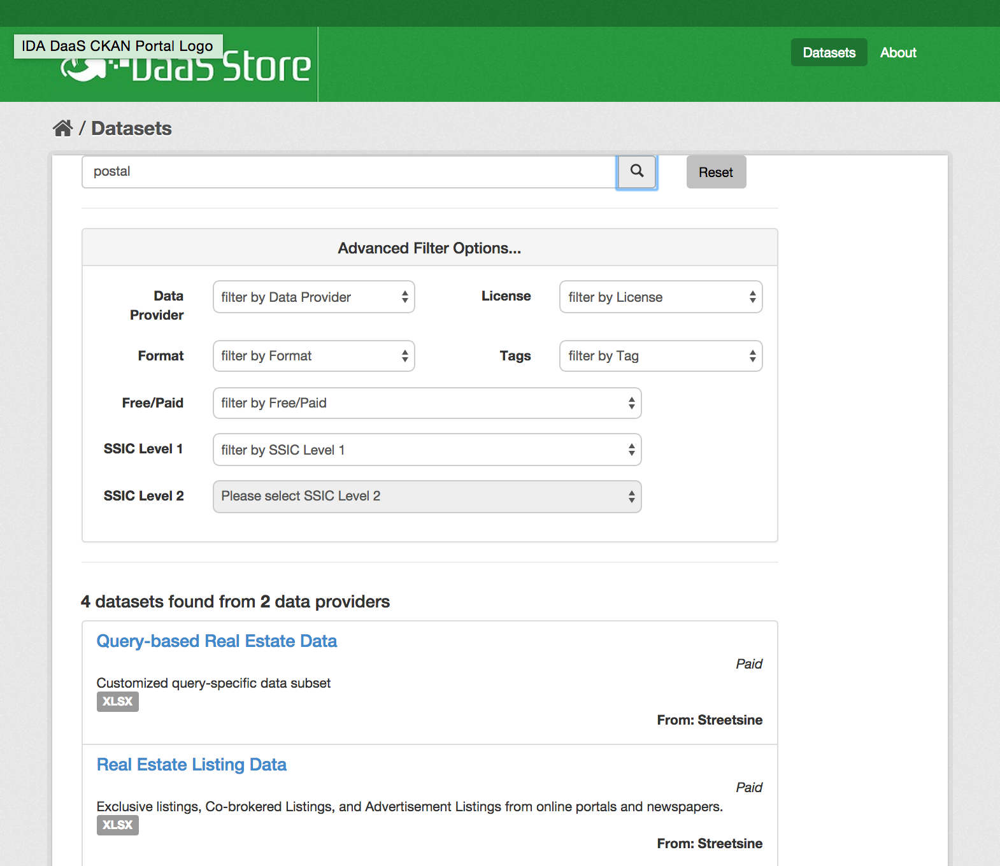
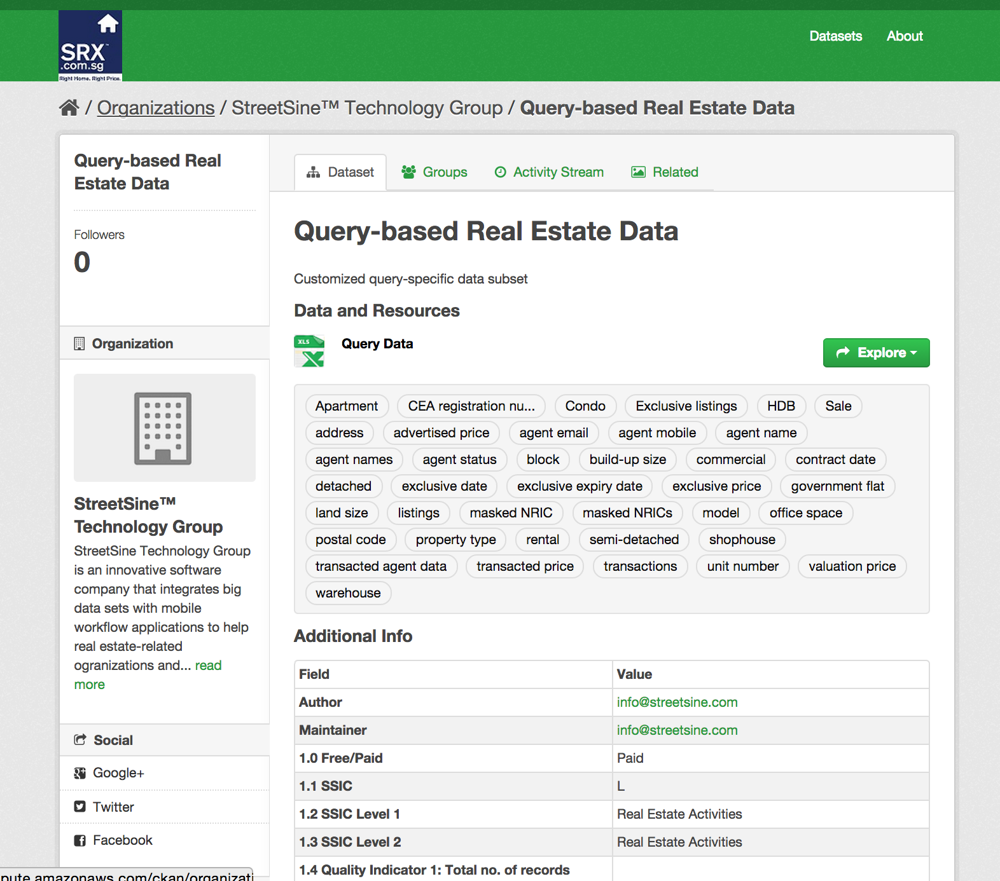

IDA is proud to announce the Data Discovery Challenge! As Singapore’s infocomm champion, IDA is looking for forward-looking solutions that will help open Singapore’s wealth of business data to discover never-before-seen insights!
Co-organised with UP Singapore, this Challenge seeks to encourage a wide range of data mash-ups of public and private datasets to unlock the new business opportunities and improve how we live, work, learn and interact in Singapore.
Singapore is becoming the world’s first Smart Nation, where government leverages dataand technology to better understand and anticipate the needs of our citizens, thereby adapting the services it provides. Private enterprises can also make better, more informed business decisions, identify new business opportunities and develop new products and services.
Supported by sophisticated analytics, data will enable, for example: people mobility to assist transport planners and operations staff to provide delivery of timely services; optimisation of energy usage of connected buildings; improvement in citizen safety through better anticipation; and an integrated health system for patient record management and remote delivery of medical assistance.
IDA now wants to ensure that private datasets are made more accessible to a wide range of potential users to enable mash-ups both with government datasets and other private datasets, expanding the supply of open data.
Why Join?
Touted as the “New Oil” of the 21st Century, data presents great rewards to all those willing to explore. Join the Challenge and see what value you can unlock for your organisation and propel Singapore along its discovery path to become a Smart Nation.
We’re inviting all members of the business community – entrepreneurs, start-ups, SMEs or MNCs to participate. This is also a great showcase for data scientists, analysts, and enthusiasts; app developers and technology solution providers.
Explore the datasets from the new Federated Dataset Registry. Participants are required to tap on at least one private dataset from this Registry to integrate with private and public datasets from other sources.
Your submission to this Challenge should be a workable prototype that can:
Increase efficiency or productivity of an enterprise;
Develop a new revenue stream or business model; or
Improve the way we live, work, learn and interact.
Such applications will provide business opportunities for developers, while enabling smarter enterprises and smarter citizen engagement for a Smart Nation.
Important Dates
Challenge launch & workshop
11 December 2014
Thursday
Tech workshop
8 January 2015
Thursday
Submissions close
25 January 2015
11:59pm
Finals & Awards Ceremony
Week of 9 February 2015 (date to be announced later)
Challenge Launch & Workshop
Date: Thursday, 11 December 2014 Time: 6:30pm Venue: 237 South Bridge Road
You can get a better understanding of the competition, the Federated Dataset Registry and datasets. It’s also a great networking opportunity to meet other talented, entrepreneurial people with complementary skills.
Participants should select a dataset from IDA’s Federated Dataset Registry and combine it with any other private or public datasets to develop data visualisation, mobile or web apps, or predictive dashboards.
Please provide attribution to the origin and owner of these datasets.
We also encourage you to bring datasets that you or your organisation has been accumulating. If you would like to contribute any of these datasets to the Federated Dataset Registry, please send an email.
Step 1: When you visit the Registry, you will be presented with the screen below.

Step 2: Next, search using a keyword(s). Click on “Advanced Filter Options” to narrow your search (as shown below). The results will appear below the filter dialogue.

Step 3: Finally, click on your desired dataset, and you will be presented with the dataset information, detailing the owner and dataset description.

Events
Challenge Launch & Data Workshop
Date: Thursday, 11 December 2014 Time: 6:30pm Venue: 237 South Bridge Road
You can get a better understanding of the competition, the Federated Dataset Registry and datasets. It’s also a great networking event to meet other talented, entrepreneurial people with complementary skills.
Date: Week of 9 February 2015 (date to be announced later) Venue: 237 South Bridge Road
Register
1. Click here to register yourself for the challenge. Important note: Every member of your team must agree to the Terms and Conditions and Non-Disclosure Agreement individually and register for the competition. Failure to comply with the above will result in disqualification.
2. Please follow up with an email to submit your team details. Include the following: your team name, team members’ names (indicate who the team leader is), and each member’s email address.
We strongly encourage all teams to register early, as it allows us to send you updates regarding the competition, as well as alert you to any new datasets that we have.
You can make your submission later.
Submissions
When you are ready submit your entry, note that you / your team should include submit:
A 2 to 5-page report / proposal (including a summary describing the idea behind your entry, the software and datasets used (with proper attribution), and the final product / solution);
Links (e.g. Dropbox) to files that you are submitting;
A Powerpoint deck of not more than 10 slides (excluding the cover page, thank-you / credit page and appendices, if any); and
Screenshot(s) / video(s) / datafile(s) that are used in your entry (maximum file size limit of 20MB in a single zipped file).
Prizes
1st prize: $5,000 in cash
2nd prize: $3,000 in cash
3rd prize: $1,500 in cash
Best Business Concept: 2 x $500 in cash
FAQ
Can I submit more than 1 idea?
Yes, you can submit more than 1 idea by adding a one line summary on your idea in the comments section during each submission.
What if I submit more than once for the same idea (as I had to make some changes)?
We will take your latest submission as the final entry for that particular idea.
What are the submission requirements?
Submissions and their appropriate insights are to be rendered in a workable protoype that can
- Increase efficiency or productivity of an organization
- Develop new revenue streams or business models or
- Improve the way we live, work, learn, play and interact.
Do I need to form a team on my own?
Yes. If you don’t have your own established team, we encourage you to attend the Launch & Data Workshop and Tech Workshop to connect with other participants and recruit potential teammates. If you are joining a team, please commit enough time, so that you are sharing the workload with your teammates.
Are the participants free to use any technologies?
Yes, you are free to use any tool or technology. But note that all entries must be submitted in a digital format.
Are the participants free to use external datasets?
Yes, you are free to use other other, non-government datasets. In fact, we encourage you to be creative in gathering these other datasets. You shall be responsible for the appropriate use of non-government datasets, subject to the originators’ terms and conditions. Participants must remember to use at least one government dataset from IDA’s Federated Dataset Registry. We encourage you to be creative in gathering these other datasets and to consider bringing your own dataset(s). You shall be responsible for the appropriate use of these other datasets, subject to the originators’ terms and conditions.
Is attendance at the workshops mandatory?
Attendance is not mandatory, but is highly encouraged. It will be a useful orientation to data visualisation, storytelling and design, and a good help to get you started. It is also an excellent opportunity for you to meet like-minded people.